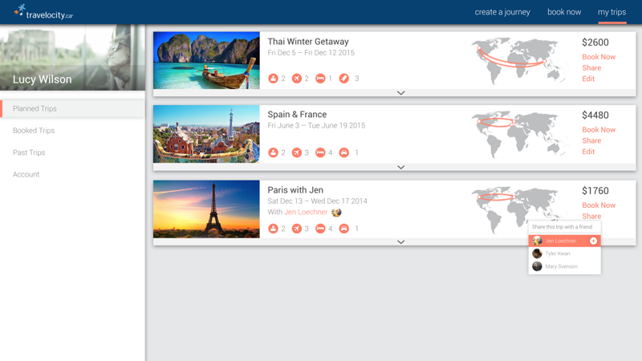
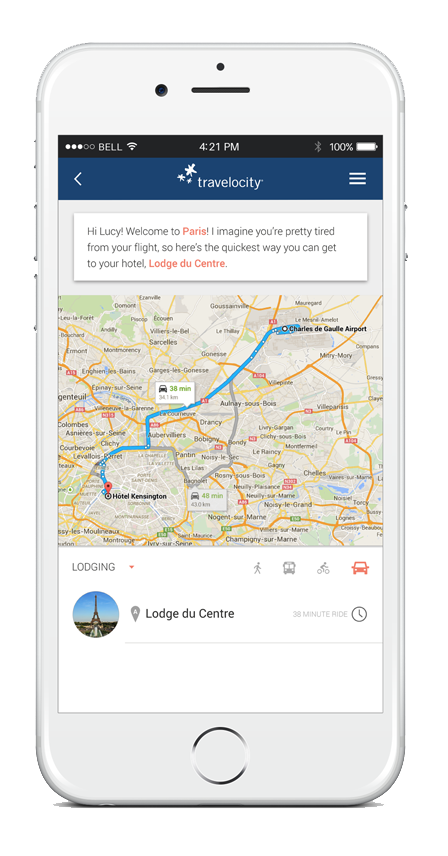
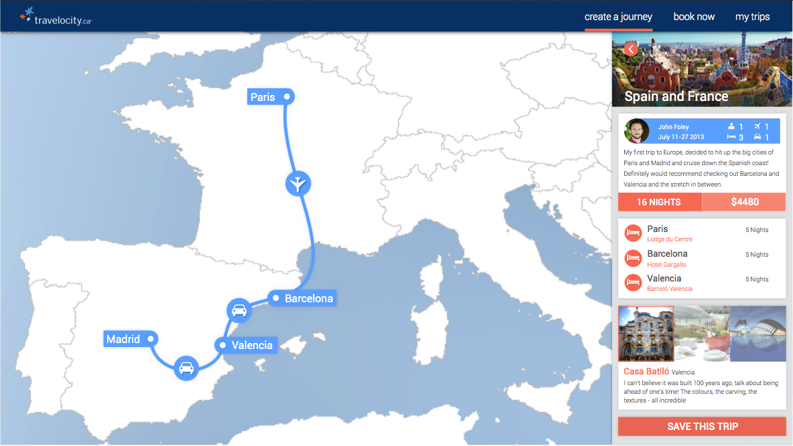

Travelocity.
A proposed web and mobile redesign for Travelocity that reintroduces the personalized experience that travelers have with a travel agent and brings this to a digital platform, accompanying a customer throughout their entire trip, as opposed to just purchasing their flight.
ROLES: Ideation, Motion Graphics, UX, UI, Copywriting.
Sector Analysis.
WITHIN THE TRAVEL SECTOR. We began by determining some of the crucial disconnects between the company and its consumers. We focused on creating openings that made way for innovation in consumer experience in the travel sector.
SECTOR. The entire travel booking sector has a booking process laden with overwhelming amounts of information. The customer loses their connection with Travelocity after their plane tickets have been purchased.
TRAVELOCITY. Travelocity aims to get individuals out of their comfort zones, so that they can enjoy positive, transformational experiences. Their goal is to get people to explore the world around them and be inspired.
AUDIENCE. Our target audience is a young explorer who is reliant on and experienced with technology. They have the desire to be a cultured traveler, and looks up to other people who have traveled the world.
Mapping competing businesses out on a matrix helped to establish Travelocity's current brand perception and find opportunities to shift their brand. By focusing on promoting experiences as opposed to flights, travelocity could fill this that no large-scale travel booking website currently offers. If flight booking friction is reduced and Travelocity is able to successfully appeal to the aspirational value of travelling, and then even help the customer throughout their entire vacation, they could become the top company in this sector.
Process.
BUTLER TREND. The group began by exploring new Tech Trends to begin creating a framework for any design decisions. With people entirely relying on their phones and making a full shift from in-person services to technology, we noticed a gap in which new travelers are not gaining the insights of a travel agent. We aimed to combine the concept of a "Trip Butler" and apply it across Travelocity's redesigned experience, to ensure customers were recieiving insightful and personalized information through every step of their trip.
JOURNEY FRAMEWORK.The creation of a journey framework that mapped out the entirety of planning a vacation allowed the group to ensure that touchpoints were being established across every part of a user's trip, which was especially useful for ideating past just a basic "flight booking" interface re-design. The creation of the journey framework lead us to the mobile app concept. User testing showed that our target audience in general stated that they wouldn't be comfortable booking a flight on their cellphone, and this is what lead us to creating the on-trip focused mobile application.
Making it Real.
FINAL INTERFACE. The redesigned app and website accompany the traveler through every aspect of experiencing their trip - from when they start planning, to the booking, to when they're on their trip, and then after they return home. By creating a service that is helpful and personalized, the traveler feels like they are in control of their journey, and Travelocity begins to fulfill the audience's desire to become cultured.
PLANNING TRIP. By creating opportunities to browse, learn, and explore, the traveler is sold on the location and experience, as opposed to just the cheapest flight. The booking process is also simplified as to not overwhelm the customer and reduce purchasing pressure.
DURING TRIP. Travelocity takes all relevant trip information and syncs it to the app, so any information can be accessed offline, while the traveler is on their trip. The customer then begins to trust Travelocity as their new traveling companion.
AFTER TRIP. Trip information is saved and can be shared with other Travelocity members. By creating a community of customers, travelers that have now become cultured because of Travelocity can share this experience with others.
PLANNING TRIP.

A grid of filterable trip styles first helps narrow down relevant selections to users, to help with the reduction of any irrelevant trip suggestions. Vivid cinemagraphic imagery immediately begins inspiring travellers to different potential trip ideas.
The interactive map allow the traveler to browse, learn, and explore which trip suits them the best. With a large map and most popular vacations shown first, zooming in on any area reveals more specific trips. Users can also change or add trip styles at any time to see new vacations. Clicking on a location shows relevant information, such as famous attractions, culture shock, and approximate price range.
Flight booking is a simple process split up into logical chunks to reduce cognitive overhead. The map helps with visualization and allows the traveler to choose the flight with the least disruptions, something they might not have noticed using pre-existing sites.
Any potential trip ideas can be saved and accessed any time from the "Planned Trips" page. This allows the user to compare and contrast any trip ideas. Details can be added, removed, or edited at any time, giving the traveller greater control over their travel plans. The traveller can even share their trips with other members, allowing multiple travellers to collaborate and build their trip together.
DURING TRIP.
The app acts as a travelling companion during the entire trip, working to build trust between the customer and Travelocity. The traveler can schedule new trips based on what's already in their schedule, or what they're currently close to. They will also never feel lost, as relevant data is synched from maps and transit information.
AFTER TRIP.
The traveler returns home and can share their experiences with others, who may be using the Travelocity site for the first time. By making the customer feel like their experiences are valuable, Travelocity fufill's the aspirational desires of the traveler.